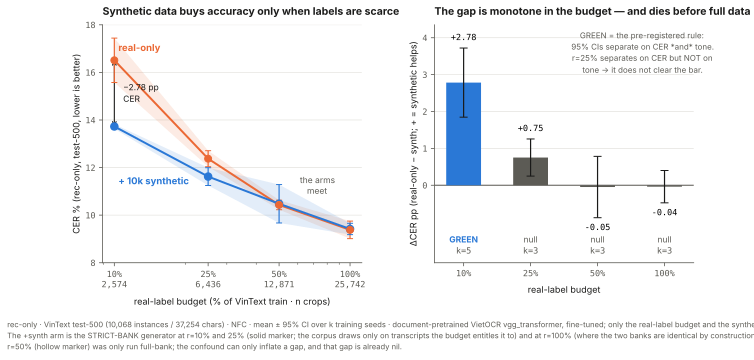
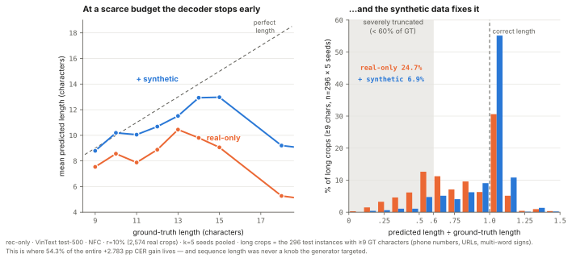
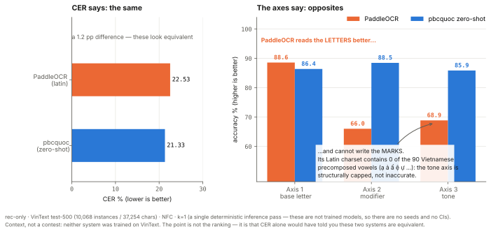

I built a synthetic data engine for Vietnamese scene text — fonts, corpus, degradation, background compositing, the usual stack. At full real data (25,742 crops) it is worth nothing, including against an augmentation-matched baseline: the control arm almost nobody runs. At a 2,574-crop label budget it is worth ≈2,200 real annotations (rec-only CER 16.51 → 13.73, k=5, non-overlapping 95% CIs), decaying to nil by 50% of the labels. And the machinery is not what paid. The gain repairs premature decoder termination on long strings — severe truncation falls 24.7% → 6.9% — while the geometric stratum the engine was ordered around carries 2.8% of it, not significantly. Switching the entire degradation stack off recovers 94% of the gain. What the engine actually supplies is sequence-level training signal, not domain realism. If you are label-poor, you need text of the right length distribution rendered legibly — not this.

TL;DR
- Full real data → synthetic buys 0. ΔCER −0.038 pp, CIs overlap (k=3). Holds even against an augmentation-matched control arm (|Δ| < 0.17 pp on every metric).
- Scarce labels (10% of train) → synthetic ≈ 2,195 real crops [95% range +1,678 … +2,553], decaying monotonically with the label budget: nil by 50%.
- The degradation stack contributed ~6% of the gain, not separable from zero. The engine's own thesis is refuted by the engine's own measurements.
What I measured it with
Vietnamese puts two orthogonal mark systems on one letter: a modifier (ă â ê ô ơ ư, and đ's stroke) and a tone (á à ả ã ạ). A single CER — or even a single "diacritic accuracy" — cannot tell you which one broke, and they break for different reasons. So the first thing I built was a three-axis scorer: base letter / modifier / tone, each with its own denominator, on Levenshtein-aligned positions after NFD decomposition.
On tone-stripped text (tiếng Việt có dấu → tiêng Viêt co dâu)
it reports CER 23.53% while the tone axis sits at 42.86% and the base axis is a perfect 100%.
Overall CER understates the tone damage by more than double. That is the entire reason the three axes
exist — and it is a unit test, not a claim.
Two Unicode facts the scorer is built around, both found by measuring rather than by reading the spec:
đ/Đhave no NFD decomposition. Treat the stroke as a combining mark and you will never once observe it — the modifier axis then reports a silent, perfect score on everyđin your corpus.- NFD returns marks in canonical order, not modifier-then-tone.
ệdecomposes toe+ dot-below + circumflex — the tone comes first. Readingnfd[1]as "the modifier" mislabelsệ's tone as a modifier: one axis inflated, the other deflated, and the total still looks plausible.
The scorer is a single dependency-free file that works on anyone's Vietnamese OCR output. It is the most reusable thing this project produced.
The story
Act 0The setup
A document-pretrained VietOCR recognizer (vgg_transformer), 25,742 real VinText
scene-text crops, and one question: can synthetic data close what's left? The architecture was locked
before any code was written, precisely so that any gain could be attributed to the data
rather than to a stronger model. The evaluation protocol — metrics, normalization, splits, gate
thresholds — was frozen first too, and the git history shows the ordering.
Zero-shot, the checkpoint reads scene text at 21.33% CER. Fine-tuned on the full real train split it reaches 9.381 ± 0.368 CER (k=3), tone 94.410 ± 0.281. That fine-tune is the vehicle, not the result. Everything after this is measured against it.
Act 1My hypothesis died first
I predicted diacritics would dominate the error, and built the three-axis scorer to prove it. It refuted me. Decomposing every character edit the baseline makes on the real test set:
| share of all character edits | |
|---|---|
| base-letter-only substitutions (case-insensitive) | 39.48% |
| diacritic-only substitutions (tone or modifier wrong, base right) | 16.12% |
Base errors outweigh diacritic errors ~2.5×. Three more pre-registered expectations
died with it: the canonical hỏi↔ngã tone confusion is essentially
absent (4 instances each way — tone failure is presence/absence, not confusion, which points
at resolution and blur rather than mark similarity); the horn (ơ ư) is the most
accurate modifier class, not the predicted failure case; and tone does not fall off a cliff at small
sizes — base falls hardest.
But the instrument survived its own verdict. Tone is still the most fragile axis per position (5.577% error vs base's 4.881%) exactly as predicted — base positions simply outnumber tone-bearing ones 2.5:1 (32,267 vs 12,875), so base contributes more total error. Both facts are true, and only the decomposition shows both. A single CER shows neither.
The error analysis, not my intuition, then set the engine's priorities: geometric distortion (tilt ≥20°: 30.34% CER), photometric (contrast <0.20: 27.55%), resolution (height <12px: 22.86%). Font coverage — the thing I assumed would matter most — is a correctness prerequisite, not where the error lives.
Act 2The gate said no
10,000 synthetic crops, matched to the real crops' image statistics (a distribution audit passed on all six stats before training), on top of the full real train set. Everything else fixed: same hyperparameters, same 12,000 iterations, k=3 seeds.
| baseline | + 10k synthetic | Δ | |
|---|---|---|---|
| CER ↓ | 9.381 ± 0.368 | 9.521 ± 0.895 | +0.140 (worse) |
| Axis 3 tone ↑ | 94.410 ± 0.281 | 94.374 ± 0.553 | −0.036 (flat) |
The pre-registered Gate-A condition — non-overlapping 95% CIs on both CER and tone — was written before the baseline's seed variance had even been measured. Neither metric separated. RED. And the protocol's consequence for a red gate is not "try harder": it is stop, do not scale to 200k.
Act 3First I suspected my code, not the world
Before touching the engine's design I ran the pre-declared bug-checks. One came back loud: I eyeballed 50 random synthetic crops against their labels and ~26% were degraded past legibility — labels correct, signal destroyed. I was training on noise. It also explained a specific signature: the synthetic arm's seed variance was 2.4× the baseline's, which is what unlearnable noise does.
I fixed the degradation stack (a per-crop severity budget: mild-or-hard, never every axis maxed at once). Illegible crops fell from ~26% to ~6%, and the predicted signature vanished exactly as predicted: CER 95% CI ±0.895 → ±0.237, tighter than the baseline's own. Every axis flipped from negative to positive.
And it was still RED: ΔCER +0.038, CIs overlapping. The hygiene fix worked; it just didn't move the result. Which is the useful outcome — it means the red was never a bug.
Act 4Then I suspected my comparator
Here is the arm almost nobody builds. My baseline already ran vietocr's default augmentation, so I measured what that actually applies (from the installed package, not from the docs): mild perspective, motion blur, colour jitter, a dotted line. No rotation, no shear, no Gaussian blur, no noise, no JPEG, no resolution loss. The baseline was under-augmented on exactly the strata I had measured as the failure drivers — so a "+X% from synthetic" claim measured against it would have been a strawman.
So I built three arms, k=3 seeds each, with B and C sharing the identical augmentor
so that C − B isolates the synthetic:
| A — baseline | B — strata-aug, no synth | C — strata-aug + synth | C − B | |
|---|---|---|---|---|
| CER ↓ | 9.381 ± 0.368 | 9.637 ± 0.074 | 9.620 ± 0.191 | −0.017 |
| Axis 3 tone ↑ | 94.410 ± 0.281 | 94.542 ± 0.142 | 94.493 ± 0.117 | −0.049 |
At matched augmentation the synthetic contributed nothing. Every metric moves by |Δ| < 0.17 pp with every CI overlapping. Aggressive augmentation of real crops captures everything this synthetic engine provides. A real crop degraded hard beats a rendered crop degraded hard.
A second finding hides in that table, and it cuts against the "just augment harder" advice too. B is not uniformly better than A: strata augmentation improves all three per-position axes (tone +0.132) while worsening CER (+0.256) and WER (+0.335). Decomposing the edits shows the regression is 92% insertions. Heavy augmentation makes the recognizer less willing to drop a character and more willing to hallucinate one: it buys per-character robustness and pays in hallucinated characters.
That is the full-data answer, and it is a null: for a document-pretrained recognizer with 25.7k real crops, generating the synthetic data was not worth it.
Act 5The pivot was pre-registered, not invented
The real-label-budget axis was reserved in the protocol before Gate A ran — it is the written branch for exactly this outcome, not a post-hoc rescue. The question changes from "does synthetic add on top of all my real data?" (answered: no) to "how much real annotation can synthetic replace?"
| r | n real | real-only CER | + synth CER | ΔCER | Δtone | pre-registered rule |
|---|---|---|---|---|---|---|
| 10% | 2,574 | 16.509 ± 0.933 | 13.726 ± 0.096 | +2.783 | +2.033 | GREEN (k=5) |
| 25% | 6,436 | 12.373 ± 0.337 | 11.621 ± 0.374 | +0.752 | +0.515 | red — tone overlaps (k=3) |
| 50% | 12,871 | 10.430 ± 0.200 | 10.478 ± 0.807 | −0.047 | −0.013 | null (k=3) |
| 100% | 25,742 | 9.381 ± 0.368 | 9.419 ± 0.237 | −0.038 | +0.158 | null (k=3) |
The gap is monotone in the budget. Synthetic data substitutes for real labels, and only when real labels are scarce.
Act 6Then I attacked my own green, twice
First attack: the corpus was cheating. My generator drew 65% of its text from the VinText train transcripts. But transcripts are labels — a practitioner at a 10% label budget does not have the other 90% of them. The eval firewall was intact (no test text anywhere), but the arm was using label-derived text beyond its stated budget. I regenerated with a strict bank (the r-subset's own transcripts only). Beyond-budget text among the synthetic labels fell from 37.0% to 11.0%, and I verified the residual is not leakage — every remaining label is explained by the r-subset's own bank, free wiki_vi tokens, or generated 1–2-character strings.
The result split. At r=10% the green survived at 84% of its original size (like-for-like at k=3: +3.357 → +2.810). At r=25% it died: CER still separates (+0.752) but tone does not (+0.515, CIs overlap), and the pre-registered rule requires both. The two-metric green dies somewhere in (10%, 25%]. That negative is reported here at the same weight as the win, and the ledger's numbers were corrected in place rather than quietly replaced — including a retraction of my own first over-reading of them.
Second attack: more seeds. The protocol pre-committed that k=5 numbers replace k=3 numbers regardless of direction — the only condition under which adding seeds to a positive result is honest rather than seed-shopping. It could have killed the green. It didn't: the means barely moved (real-only −0.03, +synth −0.00) and the anchor's spread collapsed from ±2.350 → ±0.933 — the k=3 anchor was under-sampled, not biased. The nearest CI edges (15.58 vs 13.82) sit 1.75 pp apart. The separation is not marginal.
The headline, in full. At a real-label budget of 2,574 crops (10% of VinText train), adding 10k crops from the synthetic engine cuts rec-only CER on real VinText held-out from 16.509 ± 0.933 to 13.726 ± 0.096 (k=5 seeds, non-overlapping 95% CIs) and tone accuracy from 89.463 to 91.497 (+2.033 pp) — worth ≈ 2,195 additional real annotations (95% range [+1,678 … +2,553], propagating both arms' CIs). The effect decays monotonically with the real budget and is nil at full real data.
Act 7And the mechanism isn't what I built
A curve without a mechanism is half a result, so I decomposed the +2.783 pp. The fork was pre-stated so the answer could not be shopped: if the gain concentrates on tone and on the small / low-contrast / tilted crops, the engine hit the failure strata it was designed around. If it is broad and uniform, the synthetic is acting as a generic prior at a scarce budget — a real gain, but a different mechanism, and the write-up has to say so.
It was the second one.
| stratum | ΔCER | share of the gain |
|---|---|---|
| tilt ≥20° — the #1 measured failure driver, the reason the geometric stack exists | +1.60 ± 1.94 does not clear noise |
2.8% |
| contrast <0.20 | +4.89 ± 2.97 | 8.4% |
| height <12px | +5.30 ± 2.47 | 18.3% |
| length 9–12 chars — never a targeted knob | +16.79 ± 4.13 | 41.9% |
| length ≥13 chars — never a targeted knob | +17.66 ± 3.30 | 12.4% |
The stratum the engine was built for did not significantly improve. Over half the gain lives in 296 long crops — phone numbers, URLs, multi-word signs — out of 10,068. So I looked at what the model actually does to them.

<eos> before finishing long strings, losing about a quarter of the sequence.
Adding 10k synthetic crops of almost any kind supplies the decoder training signal that
fixes it. Because a deletion is wrong on every axis a character bears, that single failure is also
why all three axes rise together rather than tone alone.
| long crops (≥9 chars, n=296, k=5) | mean GT length | mean predicted length | severely truncated (<60% of GT) |
|---|---|---|---|
| real-only (2,574 crops) | 11.19 | 8.37 | 24.7% |
| + synthetic | 11.19 | 10.25 | 6.9% |
GT real-only + synthetic
0583.871197 | 0587.87 | 0583.871197
0905.871198 | 09.87 | 0905.87198
0913.889124 | 09.88 | 0913.889124So the honest causal story is "at a scarce label budget, more crops of almost any kind fix decoder under-training" — not "my domain-realism machinery transferred." Which raised the obvious question, and it had a pre-registered answer rule waiting for it.
Act 7, concludedThen I switched the whole thing off
If the realism stack isn't what's paying, then rendering the same 10k crops with the entire degradation stack disabled should cost me most of the gain. The rule was written before the control was generated: ≥80% of the gain recovered ⇒ the realism machinery is not load-bearing; <50% ⇒ it is.
Same corpus, same fonts, same strict bank, same generation seed. The two sets' label sets are identical — only the pixels differ.
| arm (r=10%) | CER ↓ | tone ↑ | gain vs real-only |
|---|---|---|---|
| real-only (k=5) | 16.509 ± 0.933 | 89.463 ± 0.641 | — |
| + synthetic, degradation ON (k=5) | 13.726 ± 0.096 | 91.497 ± 0.134 | +2.783 / +2.033 |
| + synthetic, degradation OFF (k=3) | 13.900 ± 0.155 | 91.231 ± 0.242 | +2.609 / +1.768 |
Clean renders bought 93.7% of the CER gain (and 86.9% of the tone gain). Shipped-minus-clean is 0.174 pp — not separable from zero, CIs overlapping.
Three independent measurements had been pointing at the same thing, and I had been reading them one at a time: the augmentation-matched control, the stratum decomposition, and now this ablation. The realism machinery was never the lever. The text was.
The font-coverage gate, the degradation stack, the background compositing, the distribution audit — all of it was built for a mechanism that is not the one operating. Pixel realism was ~6% of the gain and unresolvable from noise. The text was ~94% of it.
So the practical advice, for anyone about to build what I built: don't. At a low label budget you do not need an elaborate generator. You need text of the right length distribution, rendered legibly. That is a far cheaper artifact than this one, and saying so is worth more than defending the machinery.
What the control actually measures — and it is the more useful quantity. "Degradation
off" does not mean the crops were pixel-pristine at training time. vietocr's default
image_aug is applied by the training loader to every sample, real and
synthetic alike, with no branch between them (trainer.py:80 →
dataloader.py:121), so the clean crops still received it. Which means the two arms differ
by exactly one thing — mild versus aggressive:
the floor — vietocr image_aug, in both arms |
the engine's stack — shipped arm only | |
|---|---|---|
| character | mild, generic, document-oriented | aggressive scene-realism |
| geometry | perspective 0.01–0.05 no rotation, no shear |
rotation ±15°, perspective 0.08 shear 0.18 |
| blur | fixed 3-px motion blur | motion blur len 8, defocus σ 1.5 |
| photometric | brightness/contrast ±0.2 | illumination gradients, contrast floor 0.42, glare, shadow |
| sensor | — | JPEG q34–93, Gaussian noise σ 9 |
| background | — | composited onto real scene backgrounds (p=0.82) |
So the licensed sentence is the one a practitioner actually has to decide:
A mild, generic, document-oriented augmentation floor is sufficient. The aggressive scene-realism stack on top of it bought ~6% of the gain — not separable from zero.
That marginal mild → aggressive value is more informative than a zero-augmentation arm would have been: nobody trains an OCR model with no augmentation at all, so "is realism worth it from zero" is not a question anyone faces. A true zero-augmentation arm was not run, and that stronger claim is not made.
Results
Everything, one table. Scope is rec-only on real VinText test-500 (10,068 instances / 37,254 chars), NFC, mean ± 95% CI over k seeds. Negative rows are not smaller or greyer than the positive one.
| # | arm | real crops | synth | k | CER ↓ | tone ↑ | verdict |
|---|---|---|---|---|---|---|---|
| 0 | zero-shot (no fine-tune) | 0 | — | 1 | 21.33 | 85.88 | the domain gap |
| 1 | A — real-only baseline | 25,742 | — | 3 | 9.381 ± 0.368 | 94.410 ± 0.281 | the comparator |
| 2 | + 10k synthetic (marginal-matched) | 25,742 | 10k | 3 | 9.521 ± 0.895 | 94.374 ± 0.553 | RED |
| 3 | + 10k synthetic (legibility-fixed) | 25,742 | 10k | 3 | 9.419 ± 0.237 | 94.568 ± 0.463 | RED |
| 4 | B — strata-aug, no synthetic | 25,742 | — | 3 | 9.637 ± 0.074 | 94.542 ± 0.142 | the control |
| 5 | C — strata-aug + strata-synthetic | 25,742 | 10k | 3 | 9.620 ± 0.191 | 94.493 ± 0.117 | RED (C−B ≈ 0) |
| 6 | real-only @ r=50% | 12,871 | — | 3 | 10.430 ± 0.200 | 93.869 ± 0.535 | |
| 7 | + synthetic @ r=50% | 12,871 | 10k | 3 | 10.478 ± 0.807 | 93.856 ± 0.408 | null |
| 8 | real-only @ r=25% | 6,436 | — | 3 | 12.373 ± 0.337 | 92.432 ± 0.357 | |
| 9 | + synthetic @ r=25% (strict bank) | 6,436 | 10k | 3 | 11.621 ± 0.374 | 92.948 ± 0.403 | red (tone overlaps) |
| 10 | real-only @ r=10% | 2,574 | — | 5 | 16.509 ± 0.933 | 89.463 ± 0.641 | |
| 11 | + synthetic @ r=10% (strict bank) | 2,574 | 10k | 5 | 13.726 ± 0.096 | 91.497 ± 0.134 | GREEN |
| 12 | + clean-render synthetic @ r=10% (degradation OFF) | 2,574 | 10k | 3 | 13.900 ± 0.155 | 91.231 ± 0.242 | 94% of the gain |
Rows 2–5 are the product as much as row 11 is. Row 12 is what refutes the engine's own thesis.
Detection. An off-the-shelf English-pretrained detector scores 48.0% F1 @ IoU 0.5 on VinText (probe, 20 images; input resolution ruled out as the cause). It is not this system's detector, and an un-fine-tuned detector is a lower bound on detection quality — so the end-to-end gap it produces would be an upper bound on detection-induced error, which is the wrong side for any decision. No end-to-end number is reported. Producing one from that detector would have manufactured a large, false "detection is the bottleneck" finding.
VỰ demonstrably encloses VỰC. A model that reads it
correctly is charged an error — and demo.py rediscovers exactly this case on the
first six crops it is handed.
Context, not a contest
A reader cannot tell whether 9.4% CER is good without a yardstick, so I ran off-the-shelf Vietnamese OCR on the same test-500, at the same rec-only scope, scored by the same three-axis scorer — recognition-only mode enforced (feeding a word crop to a full detect-then-read pipeline and scoring its empty return would be a strawman), with a 20-crop smoke test first to prove I was calling each system correctly (0/20 empty returns). The protocol for this was pre-registered and committed before the first run.
These systems were not trained on VinText; mine was. This table measures the task's difficulty and demonstrates the scorer on systems that are not mine. It is not a superiority claim.
| system | CER ↓ | exact ↑ | base ↑ | modifier ↑ | tone ↑ |
|---|---|---|---|---|---|
EasyOCR 1.7.2 (vi, latin_g2) | 38.46 | 37.95 | 68.11 | 74.02 | 72.75 |
PaddleOCR 3.7.0 (latin_PP-OCRv5_mobile_rec) | 22.53 | 43.55 | 88.59 | 66.03 | 68.89 |
Tesseract 5.4.0 (vie, --psm 8) | 57.18 | 32.28 | 62.14 | 75.29 | 70.19 |
pbcquoc vgg_transformer, zero-shot | 21.33 | 60.83 | 86.41 | 88.49 | 85.88 |
| ours @ full real data (25,742 crops) | 9.40 | 81.94 | 94.08 | 96.21 | 94.42 |
External systems and the zero-shot checkpoint: k=1 — a single
deterministic inference pass; they are not trained here, so there are no seeds and no CIs. The
ours row is the median over k=3 seeds, the same statistic §0.5 reports. Every row is
computed from a run artifact by scripts/context_baselines.py; none is transcribed by hand.
The r=10% arm is not in this table. It is one of my own study arms, not an external yardstick — it lives in the results tables, where its comparison is to my own baseline. This table exists to answer one question: is 9.4% CER any good?
And the scorer immediately found something a CER ranking would have buried.

nang→ngang 853,
huyen→ngang 696, sac→ngang 616). It is not mistaking one tone for another;
it is unable to write one.
And Tesseract, now that it runs, makes the same point a second time — from the other
direction. It is the worst system here on CER (57.18), and the axes say why: its
base score is the worst in the table (62.14) while its modifier score (75.29) beats
PaddleOCR's (66.03). Its vie model has the full charset, so it can write the marks;
what it cannot do is read the glyphs on in-the-wild scene text (its top tone error is
ngang → <del> — dropping the character outright). The two engines fail at
different levels of the problem:
| base | modifier | the actual failure | |
|---|---|---|---|
| PaddleOCR (latin) | 88.59 | 66.03 | reads the letters, cannot represent the marks — charset |
Tesseract (vie) | 62.14 | 75.29 | can represent the marks, cannot read the letters — domain |
A CER ranking says "57.18 is worse than 22.53" and stops. The axes say one engine is failing at representation and the other at perception — which are not the same problem and do not have the same fix.
This is the takeaway the scorer exists for, and the one I would actually use tomorrow: if you are choosing an OCR engine for Vietnamese, CER will mislead you. It will not tell you that the engine cannot represent the language. You would have to decompose the error — or read the charset — to find that out, and a leaderboard will never do either for you.
The honest reading of the gap between the rows is not "my method beats EasyOCR and PaddleOCR." It is that in-domain training data matters, and that an off-the-shelf multilingual model may not even encode the language you are pointing it at — which is the more useful warning of the two.
What I'd do differently
Two real lessons, and neither one is "I picked the wrong technique."
1. The order was wrong, not the choice
The budget sweep is the cheapest thing in this project — it is just the baseline retrained on subsets — and it is what locates which regime holds the value. I ran it last, as a contingency, after building an entire engine. Run first, it would have shown me in an afternoon that the value lives at a scarce label budget and that there is nothing at full data, and I would have known before building the generator that I was building it for a regime that could not use it. Find the regime, then build for the regime. I did it backwards and got the right answer anyway, which is luck, not method.
2. Ablation-first, not ablation-last
I built the whole stack — the font-coverage gate, geometric degradation, photometric degradation, sensor noise, real-background compositing, the distribution audit — and then ablated it at the very end, where it told me ~94% of the gain survives without any of it. The right shape is the reverse: build the minimum generator that could possibly work (text → legible render), measure it, then add each piece of machinery with an ablation attached to it. Each component would have had to earn its place against a measurement at the moment it was added, for about an hour of compute each. Instead every one of them was justified by a plausible story about scene-text realism — and the stories were all coherent, and they were collectively worth ~6%, not separable from zero.
Coherence is not evidence.
The narrower ones, stated so they are not buried:
- The degradation stack was organised around a stratum ranking that turned out not to drive the gain. I ranked geometric distortion #1 from the error analysis and built the generator around it; that stratum contributed 2.8% of the eventual gain, not significantly. The error analysis told me where the model fails. I assumed that was the same as where synthetic data helps. It isn't — and that single assumption is the most expensive line of reasoning in the project.
- One subset draw per budget point. The curve carries training-seed variance only; subset-draw variance is unquantified. Standard for label-efficiency curves, still a real limitation.
What this does not claim
- Not an end-to-end promise. Every headline number is rec-only (recognition given ground-truth boxes). Detection is deferred and its ceiling is unstated, deliberately.
- Not that synthetic data teaches Vietnamese. The document-pretrained prior does. This measures what synthetic adds on top of that prior, at a given real-label budget.
- Not a curve beyond the measured budgets. Four points on one dataset, one architecture, one 10k synthetic set. The "worth ≈2,195 real crops" readout is an interpolation between measured points only, never an extrapolation.
- Not other languages, datasets, or architectures. The architecture was locked so the data could be the only variable; that lock is also the limit of the claim.
- Not a claim that synthetic data is useless. It is a claim that this engine, at this operating point, with this comparator, bought nothing at full data and bought ~2,200 labels' worth when labels were scarce — and that the reason it worked is not the reason I built it.
The pre-registration
The protocol, the gates, the metric definitions, the attempt budget, and the branch that became Act 5 were all written before the experiments they govern, and the git history proves the ordering. That is what makes the negatives above worth anything: a gate you can move after seeing the result is not a gate.
docs/EVAL_PROTOCOL.md— the ruler: metrics, scopes, the frozen denominator, the Gate-A condition, the k=5 pre-commitment, the budget axis, the clean-render control's readings.docs/DATA_ENGINE.md— the generator's design, and the budget of two re-gate attempts that stops a red gate from being iterated into a green one.RESULTS.md— the measured-evidence ledger. Every number above, with its provenance, including the ones that were retracted and corrected in place.
They are reproduced unedited, wrong predictions and all. Verify the ordering yourself:
git log --follow --format='%ad %s' --date=short -- docs/EVAL_PROTOCOL.md
git log --format='%ad %s' --date=short -- RESULTS.mdHow this was built
Design partner (a separate reasoning thread) + agentic implementation, with a hard rule: the implementation never adjudicates its own gate. Every gate — Gate A, the strict-bank correction, the k=5 re-run, the mechanism fork, the clean-render control — was reported with its number and its provenance and then stopped, and a separate pass ruled on it. That is why "RED" survived in this repo instead of quietly becoming "promising." The manual gold transcription pass is the author's own work and is not delegated to a model: a model-prefilled gold set inherits the model's errors and biases the comparison in the one direction that would void the artifact.
Reproducing it
VinText is licensed for research use and cannot be redistributed, so "clone and rerun the study" is not something I can hand you. What is runnable stands alone.
1. The three-axis scorer — no dataset, no dependencies, one file. It works on any Vietnamese OCR system's output.
python -m unittest test_vi_three_axis_scorer -v # 26 tests, stdlib only
python vi_three_axis_scorer.py your_predictions.tsv --confusionfrom vi_three_axis_scorer import score
s = score([("giá", "gia"), ("Việt Nam", "Viet Nam")]) # (ground_truth, prediction)
print(s.report())
print(s.cer, s.tone_acc, s.base_acc)2. The demo — any image, the shipped checkpoint, the three-axis breakdown.
python demo.py crop.jpg --gt "Việt Nam"
python demo.py path/to/crops/ --gt-tsv labels.tsv --confusion3. The generator runs without VinText (wiki_vi is public; the font manifest and its
per-font diacritic-coverage gate ship with it). 4. The figures rebuild from the run
artifacts, not from hand-typed numbers (python scripts/make_figures.py).
Environment. RTX 4060 Laptop (8 GB), Python 3.13, torch 2.13+cu126. One training run ≈ 27 min. Every result in the ledger cites its script, config, seed, and data manifest.